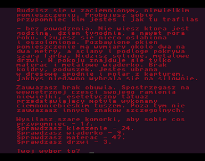
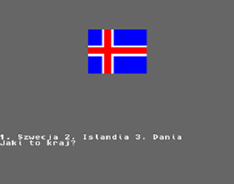
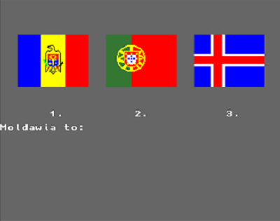

Tutaj znajdziesz proste programy, które napisałem ucząc się
programowania w języku AMOS na najlepszy komputer świata.
Powrót.
Gra tekstowa Amelia.

Autor : Dominik Matusiak
Wydawnictwo Wielokrotnego Wyboru
(zaprogramowałem za zgodą autora i wydawcy)
Format pliku - obraz dyskietki .adf
Flagi Europy. Gra-quiz dla dzieci.

Wersja bez dźwięku - obraz dyskietki .adf
Flagi Europy. Gra-quiz dla dzieci.

Wersja z dźwiękiem - obraz dyskietki .adf z archiwum
w formacie .lha